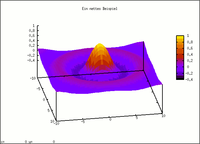

Gnuplot
Ausbaufähige Anleitung
Dieser Anleitung fehlen noch einige Informationen. Wenn Du etwas verbessern kannst, dann editiere den Beitrag, um die Qualität des Wikis noch weiter zu verbessern.
Anmerkung: Hier kann an allen Ecken und Enden noch vervollständigt und strukturiert werden.
Dieser Artikel wurde für die folgenden Ubuntu-Versionen getestet:
Ubuntu 14.04 Trusty Tahr
Zum Verständnis dieses Artikels sind folgende Seiten hilfreich:
Gnuplot  ist ein mächtiger, skript- bzw. kommandozeilengesteuerter Funktionsplotter, welcher zwei- und dreidimensionale Plots erzeugen kann. Für die Einarbeitung in die Skriptsprache von Gnuplot sollte man etwas Zeit einplanen, jedoch kann man durch Herumspielen mit Beispielskripten schon in kurzer Zeit zu sehr ansprechenden Ergebnissen kommen.
ist ein mächtiger, skript- bzw. kommandozeilengesteuerter Funktionsplotter, welcher zwei- und dreidimensionale Plots erzeugen kann. Für die Einarbeitung in die Skriptsprache von Gnuplot sollte man etwas Zeit einplanen, jedoch kann man durch Herumspielen mit Beispielskripten schon in kurzer Zeit zu sehr ansprechenden Ergebnissen kommen.
Es ist möglich, auf den Bildschirm dargestellte Funktionen auch interaktiv zu drehen und zoomen. Die Plots können auf dem Bildschirm dargestellt und/oder in verschiedenen Graphikformaten abgespeichert werden.
Trotz seines Namens hat Gnuplot nichts mit dem GNU-Projekt zu tun. Gnuplot steht zwar unter einer freien Open Source-Lizenz, jedoch dürfen modifizierte Versionen nur als Patches zum Originalprogramm veröffentlicht werden.
Installation¶
Folgende Pakete können installiert werden [1]:
gnuplot (universe)
gnuplot-x11 (universe, grafische Ausgabe)
gnuplot-doc (universe, Dokumentation)
 mit apturl
mit apturl
Paketliste zum Kopieren:
sudo apt-get install gnuplot gnuplot-x11 gnuplot-doc
sudo aptitude install gnuplot gnuplot-x11 gnuplot-doc
Zusätzlich gibt es mit gnuplot-nox (universe auch eine Version, die ohne eine grafische Oberfläche verwendet werden kann. Ab Ubuntu 14.04 steht mit gnuplot-qt (universe) auch eine Qt-Oberfläche zu Verfügung (die X11- und Wxt-Oberfläche ausgnuplot-x11 sind in diesem Paket ebenfalls enthalten).
PPA¶
Benutzt man eine ältere Ubuntu-Version oder möchte die aktuelle Version von Gnuplot installieren, so kann man auf ein "Personal Package Archiv" (PPA) [2] zurückgreifen. Diese Quelle beinhaltet immer die offizielle Version und ist für verschiedene Ubuntu-Versionen verfügbar.
Adresszeile zum Hinzufügen des PPAs:
ppa:gladky-anton/gnuplot
Hinweis!
Zusätzliche Fremdquellen können das System gefährden.
Ein PPA unterstützt nicht zwangsläufig alle Ubuntu-Versionen. Weitere Informationen sind der  PPA-Beschreibung des Eigentümers/Teams gladky-anton zu entnehmen.
PPA-Beschreibung des Eigentümers/Teams gladky-anton zu entnehmen.
Damit Pakete aus dem PPA genutzt werden können, müssen die Paketquellen neu eingelesen werden.
Nach dem Aktualisieren der Paketquellen erfolgt die Installation wie oben beschrieben.
Benutzung¶
Grundsätzlich kann gnuplot auf drei Arten betrieben werden: Interaktiv, im Batch-Modus oder über ein (grafisches) Frontend. Der interaktive Modus und der Batch-Modus können auch kombiniert werden.
Konsole¶
Interaktiv¶
Durch den Befehl gnuplot wird Gnuplot interaktiv in einem Terminalfenster [3] (oder auf der Konsole) gestartet. Man kann nun Gnuplot-Befehle eingeben, welche zur Laufzeit abgearbeitet werden. Zum Testen kann man nun z.B. die folgende Zeile eingeben:
splot [-15:15.01] [-15:15.01] [-0.2:1] sin(sqrt(x**2+y**2)) / sqrt(x**2+y**2)
Es sollte sich nun ein Fenster mit einem einfachen, dreidimensionalen Funktionsplot öffnen. Mit der linken Maustaste kann man den Plot rotieren. Auch das Hinein- und Herauszoomen sowie Dehnen und Stauchen der einzelnen Achsen ist möglich, die Tastenbelegungen hierfür müssen jedoch u.U. erst konfiguriert werden. Weitere nützliche Befehle sind:
| Befehl | Funktion | Hinweis |
set grid | Hinzufügen von Hilfslinien im Koordinatensystem | Befehl vor dem Drucken der Funktion eingeben |
plot | drucken zweidimensionaler Funktionen | |
set multiplot | drucken mehrerer, zweidimensionaler Funktionen in einem Koordinatensystem | erst diesen Befehl eingeben, dann nacheinander die Funktionen |
Zum Verlassen einer Gnuplot-Sitzung und Rückkehr zur Shell gibt man den Gnuplot-Befehl exit ein.
Stapelverarbeitung¶
Im Batch-Modus arbeitet Gnuplot eine Liste von Gnuplot-Befehlen ab, welche in der Regel in einer Textdatei gespeichert sind. Nach Abarbeitung aller Befehle beendet sich Gnuplot selbständig.
Um die Gnuplot-Befehle, die in einer Testdatei namens test.plt gespeichert sind, im Batch-Modus abzuarbeiten, gibt man Gnuplot den Datainamen als Argument mit:
gnuplot test.plt
Dieser Befehl eignet sich jedoch nicht zur Ausgabe von Funktionenplots auf dem Bildschirm. Da sich Gnuplot nach Abarbeiten aller Zeilen in der Datei test.plt schließt, wird auch das Fenster mit dem Funktionsplot sofort geschlossen. Besser ist es, wenn man Gnuplot durch die Option -persist mitteilt, dass geöffnete Fenster auch nach Beenden von Gnuplot offen bleiben sollen:
gnuplot -persist test.plt
Doch auch dieser Befehl ist nicht perfekt: Da sich Gnuplot schon beendet hat, kann man den Funktionsplot nicht interaktiv mit der Maus drehen. Eine Lösung ist es, Gnuplot wie folgt zu starten:
gnuplot test.plt -
Der Bindestrich steht hierbei für die Standardeingabe stdin (in der Regel die Tastatur). Mit diesem Befehl arbeitet Gnuplot erst die Datei test.plt ab und wechselt anschließend in den interaktiven Modus, in dem das Programm auf weitere Befehle von der Tastatur wartet.
Um den Batchmodus zu testen, kann man die Datei test.plt z.B. mit folgendem Inhalt füllen:
set view 130, 10, 1, 1 set samples 50, 50 set isosamples 50, 50 unset surface set title "Ein nettes Beispiel" set pm3d implicit at s set pm3d scansbackward splot sin(sqrt(x**2+y**2))/sqrt(x**2+y**2)
 Nach der Abarbeitung dieser Befehle durch Gnuplot sollte sich wieder ein Fenster mit einem dreidimensionalen Plot öffnen. Dieser sollte ähnlich aussehen wie auf nebenstehendem Screenshot dargestellt.
Stapelverarbeitung - Zugriff auf Umgebungsvariablen¶
Möchte man dem Skript test.plt zusätzliche Parameter von der Kommandozeile aus übergeben, so kann dies z.B. wie folgt erreicht werden:
meine_datei=system("echo $FILE")
plot meine_datei using 1:2 with line linewidth 3 notitleDer Aufruf erfolgt dann z.B. mit
FILE=data01.txt gnuplot test.plt
Dies ist nützlich, falls man mehrere gleichartige Daten-Dateien mit der selben Gnuplot Batch-Datei verarbeiten möchte.
Benutzen von LaTeX-Schriftarten¶
Generell ist eine LaTeX-kompatible Ausgabe als picture-Umgebung mit
set term latex
möglich, liefert jedoch mitunter nicht die gewünschten Ergebnisse die Formatierung betreffend. Es ist aber auch möglich, umgekehrt die Schriftart zu nutzen und dann die resultierende Ausgabe einzubetten. Standardmäßig benutzt LaTeX die Computer Modern-Schriftarten, zum Beispiel Computer Modern Roman (CMR). Mit dieser gibt es allerdings Encoding-Probleme, weshalb auf SFRM ausgewichen werden sollte (siehe Gnuplot 4.2-Handbuch vom 3. März 2007, Seite 181). Dies macht die Installation folgender Pakete notwendig:
cm-super (universe [2], stellt die Schriftarten zur Verfügung )
groff (enthält das Tool pfbtops, transformiert pfb-Dateien PostScript-kompatibel )
mit apturl
Paketliste zum Kopieren:
sudo apt-get install cm-super groff
sudo aptitude install cm-super groff
Nun kann man die Schriftart zum Beispiel in der PostScript-Ausgabe verwenden:
set term postscript fontfile '/usr/share/texmf/fonts/type1/public/cm-super/sfrm1000.pfb' "SFRM1000"
In der Gnuplot-Konsole erscheint die Bestätigung
Font file '/usr/share/texmf/fonts/type1/public/cm-super/sfrm1000.pfb' contains the font 'SFRM1000'. Location: /usr/share/texmf/fonts/type1/public/cm-super/sfrm1000.pfb
Frontends¶
Programme wie
verwenden Gnuplot zur Ausgabe von Funktionen und fungieren somit als grafische Frontends. Über das Frontend kann man auch Optionen an Gnuplot übermitteln, welche z.B. die Ausgabeform oder die Beschriftung betreffen.
Mitunter erfolgt der Einsatz über ein Frontend auch über zwei Ecken. So werden die beiden kommandozeilenbasierten Computeralgebra-Systeme Maxima und Octave häufig über ein grafisches Frontend wie z.B. wxMaxima oder TeXmacs bedient.
Konfiguration¶
Standardmäßig sind die auf dem Bildschirm ausgegebenen Funktionsplots optisch noch nicht so ansprechend. Man könnte sich z.B. statt einem grauen Fensterhintergrund einen weißen wünschen, das Fenster könnte etwas größer sein, die Linien des Funktionsplots etwas dicker, u.s.w. Außerdem möchte man vielleicht bevorzugte Einstellungen bei jedem Start direkt zur Verfügung haben.
Dazu wird die Datei ~/.gnuplotrc verwendet. Ein Beispiel für diese Konfigurationsdatei findet man unter /usr/share/gnuplot/gnuplot/<VERSION>/gnuplotrc. Wobei <VERSION> ausgehend von der tatsächlich installierten Version zu ersetzen ist. Man kann die Datei einfach in das Homeverzeichnis kopieren, hier als Beispiel für Version 4.6:
cp /usr/share/gnuplot/gnuplot/4.6/gnuplotrc ~/.gnuplotrc
Dort können alle Befehle oder Definitionen eingetragen werden, die das Programm beim Start ausführen soll. Einige Erläuterungen dazu finden sich auch in der Beispieldatei.
Einstellungen, die das grafische X-System betreffen, kann man auch über die Datei ~/.Xresources konfigurieren. Falls die Datei noch nicht existiert, legt man sie neu an. In diese Datei kann man z.B. folgende Befehle hinzufügen. Zeilen mit einem führenden Ausrufezeichen sind Kommentare und werden ignoriert. Für weitere mögliche Einstellungen sollte man die Dokumentation von Gnuplot lesen.
! gnuplot options ! modify this for a convenient window size gnuplot*geometry: 800x600 ! color options gnuplot*background: white gnuplot*textColor: black gnuplot*borderColor: black gnuplot*axisColor: black ! multiplicative factor for point styles gnuplot*pointsize: 2 ! line width options (in pixels) gnuplot*borderWidth: 2 gnuplot*axisWidth: 2 gnuplot*line1Width: 2 gnuplot*line2Width: 2 gnuplot*line3Width: 2 gnuplot*line4Width: 2 gnuplot*line5Width: 2 gnuplot*line6Width: 2 gnuplot*line7Width: 2 gnuplot*line8Width: 2
Diese Einstellungen werden beim nächsten Start einer X-Sitzung eingelesen. Hierzu reicht es, sich auszuloggen und neu einzuloggen. Alternativ gibt man in einem Terminal [2] den Befehl
xrdb -load ~/.Xresources
ein.
- Erstellt mit Inyoka
-
 2004 – 2017 ubuntuusers.de • Einige Rechte vorbehalten
2004 – 2017 ubuntuusers.de • Einige Rechte vorbehalten
Lizenz • Kontakt • Datenschutz • Impressum • Serverstatus -
Serverhousing gespendet von